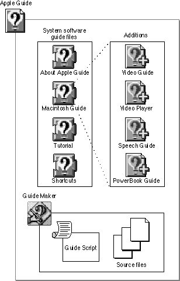
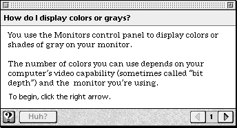
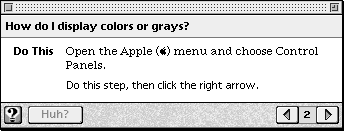
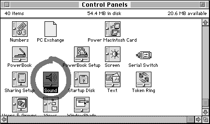

Legacy Document
Important: The information in this document is obsolete and should not be used for new development.
Important: The information in this document is obsolete and should not be used for new development.


What Is Apple Guide?
Apple Guide is a powerful help system that supports the design and delivery of interactive onscreen instructions. These instructions are grouped in files (known as guide files) according to their particular focus.For end users, Apple Guide provides quick and easy access to versatile help resources tailored to their needs. For instructional designers, scriptors, and developers, Guide Maker provides a tool for developing comprehensive onscreen help.
Apple Guide consists of a system extension that delivers the help system. Figure 1-1 shows Apple Guide and other components provided with it.
Figure 1-1 The Apple Guide components

Apple Guide is one of two help systems currently available from Apple. It joins Balloon Help, a help system provided in System 7 and higher versions of system software. (If you are not familiar with Balloon Help, see Inside Macintosh: Macintosh Toolbox Essentials.) With Balloon Help, users can find out the function or significance of virtually any object on the Macintosh screen, such as icons, windows, and commands. Balloon Help answers the question "What is this item?" With Apple Guide, you can take help to the next level of user inquiry: "How do I accomplish this task?" As a result, Apple Guide does not replace or duplicate Balloon Help but instead expands the help available to users.
- guide files that describe the Finder and other features of the Macintosh Operating System. Examples include the following:
- About Apple Guide describes the help system provided with the Macintosh computer.
- Macintosh Guide is the main guide file for system software's help system and provides step-by-step instructions for a variety of tasks.
- Tutorial provides training in basic Macintosh skills.
- Shortcuts provides keyboard commands and tips.
- four Macintosh Guide additions guide files--Video Guide, Video Player, Speech Guide, and PowerBook Guide--that add content to Macintosh Guide about a specific piece of hardware attached to the Macintosh computer or certain system software features.
- Guide Maker, a tool for building and testing your guide files.
- Guide Script, an authoring language for developing guide files for your application.
How the User Views Apple Guide
Apple Guide leads users to answers through interactive windows (known as panels) that explain a concept or task. Apple Guide panels are movable and float on top of other application windows. Users can therefore carry out the help instructions they read in panels, even from within an application, as they work on a given task. You link each of your help topics to a single panel or panel sequence, which is a set of related panels that the user can access linearly using left and right navigation arrows. A panel sequence can also contain subsequences (or panel branches).For example, Figure 1-2 shows the first panel that the user views in Macintosh Guide after selecting the topic "How do I display colors or grays?"
Figure 1-2 A typical Apple Guide panel

Figure 1-3 shows the next panel in that same sequence.
Figure 1-3 A panel that is part of a sequence

Apple Guide automatically provides left and right navigation arrows on panels so that the user can move linearly through a sequence. You can place additional buttons on panels to provide quick access to different parts of the guide file or your application. Along with buttons, you can also place styled text, graphics, and QuickTime movies. To help you create a clear and consistent interface, Apple suggests using standard panel types that apply to specific categories of information.
To further enhance your help instructions, you can identify interface elements to the user using special Apple Guide markers--called coachmarks--that circle or point to items in the screen. For example, Figure 1-4 shows a coachmark that appears in Macintosh Guide whenever a panel tells the user to open the Sound control panel. This particular coachmark draws a red circle around the Sound control panel.
Figure 1-4 The Macintosh Sound control panel circled with a coachmark

In addition to these powerful design elements, you can have Apple Guide present context-sensitive help. If you do, Apple Guide displays help instructions that specifically apply to the user's needs. To provide context-sensitive help, you use commands where programmatically possible to verify whether the user's environment meets a specific requirement or has changed. The functions that check the user's environment are called context checks.
For example, you can use context checks with Guide Script commands to have Apple Guide
If programmatically possible, you can also have Apple Guide perform certain actions for the user (for example, use AppleScript to open a control panel for the user). You can have Apple Guide perform a step on a panel only if the user fails to do so or you can create an entire sequence where Apple Guide demonstrates how to perform a task.
- skip a panel that tells the user to perform an action when the associated condition is already true (for example, skip a panel that tells the user to open a folder if that folder is already open)
- display a panel that explains how to remedy an error the user made on a previous panel (for example, if the user fails to open a folder, display a panel that tells the user how to open it)
- display a panel only if a certain condition is true (for example, display a panel only if the user has particular software installed)
You can find out more about the Apple Guide features and learn how to implement them properly in the next chapter, which provides tips and suggestions for designing guide files.
The Many Uses of Apple Guide
Apple Guide is designed to give you flexibility in choosing the type of help you provide. Using the design tips and suggestions in this book, you can make certain decisions about how to organize and present your help. You can choose the order in which users access information and the format in which the information appears. You can use Apple Guide as the only help system for your application, or you can use it to supplement an existing help system. You can also integrate guide files into your application, a practice that Apple strongly recommends.The Apple Guide guide files can accommodate a diverse range of help requirements. You can pick from several guide file types depending on the form of instruction that you desire. These types include
For more about the guide file types, see the section "Designing Guide Files" beginning on page 2-19.
- orientation to your entire help system
- task-oriented procedures on your application's features and use
- tutorials that guide users through a focused learning path
- advanced or specialized features required by only certain users
- tips and reference material commonly found on quick reference cards
In addition to creating guide files for your application, you can also use them for internal training or as a presentation tool. For example, you can create a guide file that shows employees how to do standard company procedures, such as filling out benefit forms or ordering supplies. Or you can create a guide file that describes a project or plan.